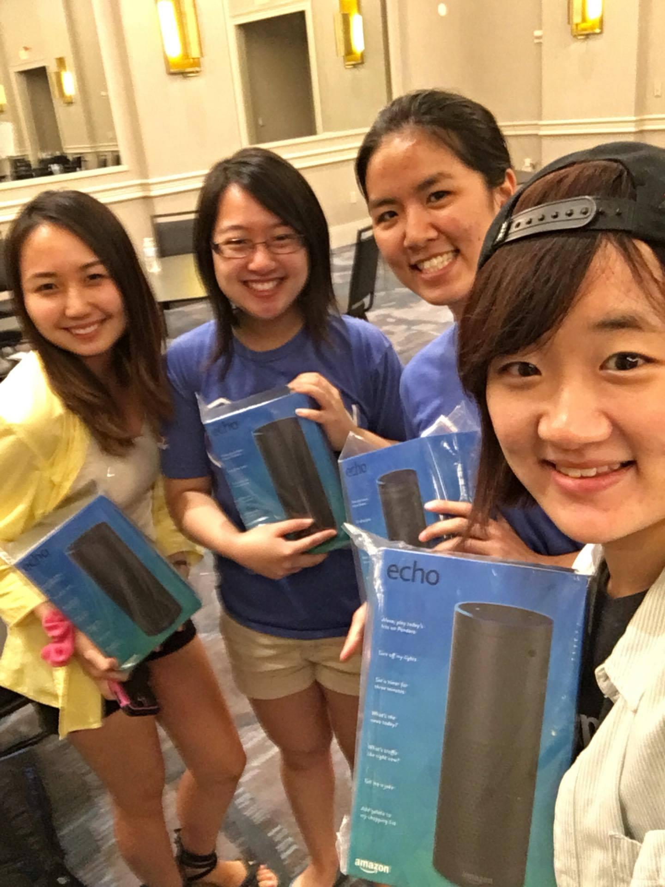
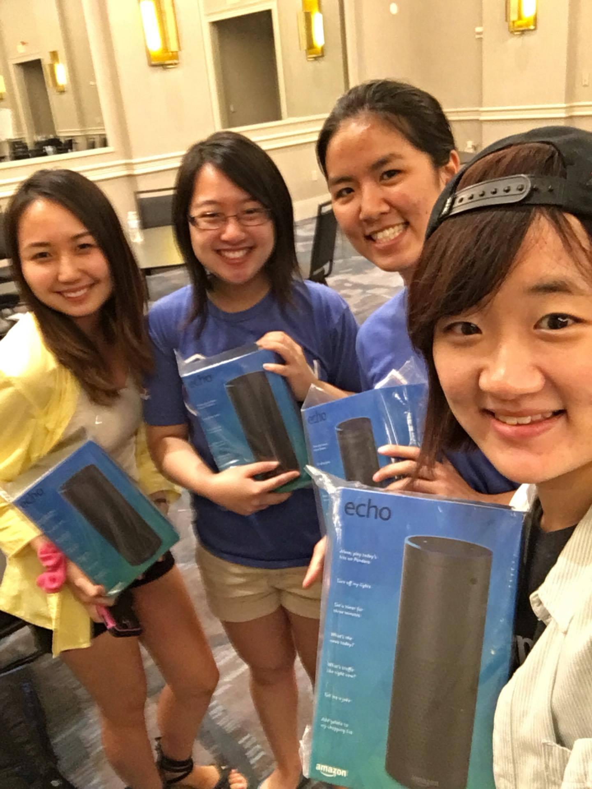

Capital One | Richmond, VA
Summer 2016 | Software Engineering Intern
This summer I worked at Capital One's gorgeous West Creek site, which actually looks and feels more like a college campus than my university does!
I was part of the Consumer Identity department and worked on front-end for an open-source project that verifies customers using Capital One's login credentials. I primarily prototyped modals using Angular and the in-house Bootstrap mod, both of which were fairly new to me and provided great learning experiences. I was also exposed to the wonders of Gulp (though not too far from Grunt, which I used last year) and BrowserSync, which streamlined development considerably.
A notable highlight of the summer was the Carbon intern hackathon, where my team clinched first prize in the API category! We made a Django application that crowd sources gift ideas and also integrates Capital One's DevExchange Rewards API. For more about the experience, you can refer to this blog post written by my teammate that they published on Medium, as well as check out the repo (featuring a very extensive readme)!
Till the end I was reminded that effective utilization of tech can make immense improvements to banking, which Capital One is certainly making strides towards. I was impressed by and glad to be part of their mission to insource tech talent, focus on open source solutions, and engage in community outreach (I got to teach MIT App Inventor to middle and highschoolers, which was a ton of fun). I can only hope that other older financial institutions follow their lead and consider technology as a larger asset.
Summer Tech Stack:
Angular, Node, Bootstrap, Materialize OneUI, Angular-translate, Gulp, Bower, Django
 
